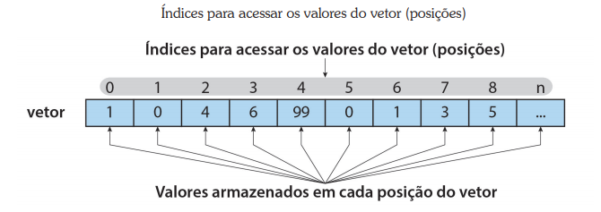

• Linguagem integrada ao navegador.
• Usa o chamado “modelo de execução controlado por eventos”, ou seja, o código JavaScript
só é executado quando o evento ao qual está associado é acionado (em alguns casos,
podemos inserir o código sem a associação a eventos e o mesmo é executado conforme
o navegador interpreta a página, mas isso é menos usual ).
• Processamento do lado cliente, no navegador.
É uma linguagem interpretada, diferente de outras linguagens que fazem o processo de
compilação antes de executar o programa como, por exemplo, a linguagem Java.
Javascript é uma linguagem desenvolvida para a internet, com ela é possível realizarmos
validações do lado cliente, interações entre páginas.
Com javascript é possível alterar dinamicamente estilos e elementos da página HTML, quando
juntamos javascript com css temos então o DHTML, ou criação de HTML dinamicamente.
Usos mais comuns de JavaScript:
Peguemos o site do Google como exemplo:
Todo evento acontece em um elemento da página.
E as reações aos eventos (programadas em JavaScript) são sempre registradas como propriedades dos elementos
| Elementos | Evento | Propriedade que registra reação | ||||
| Todos elementos que aparecem na página |
|
|
||||
| input, select, textarea |
|
|
||||
| Form | Formulário sendo enviado | onsubmit | ||||
| Body | Página terminou de ser montada | onload |
Podemos inserir nossos códigos JavaScript das seguintes formas:
Não se preocupe com os comandos em Js por hora, iremos abordar mais a frente.
Quando inserimos um código JavaScript em uma tag, este é sempre associado a um evento.
Note que, se o JavaScript estiver envolvido por aspas, só é possível usar apóstrofes no código
(que, no JavaScript, tem a mesma função).
Exemplo:
<input type="button" value="Clique" onclick="this.value='Texto alterado'">
Se fizermos uma comparação com CSS, esse modo de inserir JavaScript em uma página,
seria o modo incorporado.
Dentro do body ou do head, utilizamos a tag <script>. Note que os comandos podem ser
executados sem a necessidade de eventos. Isso não é o mais comum, mas é um recurso que
usaremos em nossos estudos.
Exemplo:
<p id="p-texto">Texto Escrito na Tag</p>
<script type="text/javascript">
document.getElementById("p-texto").innerHTML = "Texto Alterado pelo JavaScript";
</script>
----- ----- ----- ----- ----- ----- ----- -----
Texto Escrito na Tag
----- ----- ----- ----- ----- ----- ----- -----
Assim como em CSS, também podemos criar um arquivo separado do html com nossos códigos em JavaScript, esse arquivo deve ser salvo com a extensão .js e é chamado no cabeçalho da página com a tag <script>
Exemplo:
<script type="text/javascript" src="arquivoJavaScript.js"></script>
Sempre em um lugar na memória do computador, que pode ser do tipo: Constante ou Variável.
• Constante – seu conteúdo não muda (ou seja, é constante)
• Variável – seu conteúdo pode ser trocado (ou seja, é variável)
Em JavaScript apenas estudaremos VARIÁVEIS, pois nem todos os navegadores reconhecem constantes.
JavaScript é uma linguagem de tipos de variáveis flexíveis, ao contrário de outras linguagens que exigem a declaração de uma variável com um tipo de dado definido.
Logo, não precisamos definir o tipo de uma variável. Com isso podemos mudar seu valor de texto para número, por exemplo, durante a execução do script (prática que deve ser evitada!).
Exemplo:
var nome=“Fulano”;
nome=“Fulano”;
var nome;
Por exemplo, e se eu quiser transferir um dado de um lugar para outro?
Operação de atribuição (operador =)
x = y;
a = b + c
A variável x recebe o conteúdo da variável y
A variável a recebe o RESULTADO da operação b + c
Para você verificar a tabela abaixo, declaramos uma variável x igual a 10
var x=10;
| OPERADOR | EXEMPLO | RESULTADO | |
| + | Adição | z = x + 10 | z = 20 |
| - | Subtração | z = x - 10 | z = 0 |
| * | Multiplicação | z = x * 10 | z = 100 |
| / | Divisão | z = x / 10 | z = 1 |
| % | Módulo (Resto da Divisão) | z = x % 3 | z = 1 |
| ++ | Incremento Antes | ++z | z = 11 |
| ++ | Incremento Depois | z++ | z = 10 |
| -- | Decremento Antes | --z | z = 9 |
| -- | Decremento Depois | z-- | z = 10 |
Também usamos o operador “+” para concatenar Strings (textos) em JavaScript
Exemplo:
var x = “Bom ”;
var y = “dia”;
var z = x + y;
// após a execução o resultado será: z = Bom dia
Cuidado, quando usamos o operador “+” com números e textos, o resultado é sempre texto (o número é convertido automaticamente);
var x=4;
var y=“a”;
var z=x+y; // o resultado será z=“4a”
var x=“4”;
var y=“4”;
var z=x+y; //o resultado será z=“44”
Apesar de você não declarar os tipos das variáveis, o JavaScript sabe sempre o tipo de dado com que está trabalhando. E para ele, tudo que o usuário escreve é TEXTO, mesmo que o usuário escreva algarismos. Como para TEXTO o sinal de + significa uma coisa diferente do que para os NÚMEROS, isso pode ficar complicado.
Por isso, se numa operação existe um NÚMERO e um TEXTO, o NÚMERO é sempre convertido e a operação ocorre como se tudo fosse TEXTO.
Como comentado anteriormente, quando o usuário entra com dados de qualquer forma (veremos uma forma mais a frente), os valores lidos são sempre textos. Caso seja necessário realizar alguma operação matemática com os valores lidos, precisamos inicialmente convertêlos em números. Para isso temos duas funções em JavaScript que convertem para inteiro ou para float (número com casas decimais).
Para converter um texto em número inteiro utilizado a função parseInt.
variável = parseInt (valor [, base]);
Para converter um texto em número real (float), utilizamos a função parseFloat.
variável = parseFloat (valor);
É uma boa prática inserirmos comentários em nossos códigos, em JavaScript podemos fazer isso de duas formas:
Para Comentários de várias linhas:
/* Inserimos aqui
Nossos comentários
Em várias linhas
*/
Para Comentários de uma única linha:
//Aqui inserimos somente uma linha de comentário
Os Comandos sempre chamam Funções (por isso os Comandos também são chamados de ‘Chamadas de Funções’). E essas Funções são criadas assim:
function <nome da função> ([<lista de parâmetros>])
<bloco de instruções>
Para entender a função, primeiro precisamos saber o que significa essa [<lista de parâmetros>]
Uma Instrução Simples sempre termina com “;”
var x = 12;
Um Bloco de Instruções começa com um “{“ e termina com um “}”. E dentro dele vai uma série de instruções:
{
var x = 12;
alert(x);
}
| OPERADOR | NOME | EXEMPLO | RESULTADO |
| == | Igual | x == y | Verdadeiro se x for igual a y |
| != | Diferente | x != y | Verdadeiro se x for diferente a y |
| === | Idêntico | x === y | Verdadeiro se x for igual a y e do mesmo tipo |
| < | Menor | x < y | Verdadeiro se x for menor a y |
| > | Maior | x > y | Verdadeiro se x for maior a y |
| <= | Menor ou Igual | x <= y | Verdadeiro se x for menor ou igual a y |
| >= | Maior ou Igual | x >= y | Verdadeiro se x for maior ou igual a y |
| OPERADOR | DESCRIÇÃO | EXEMPLO (a = 3 e b = 5) |
| && | E Lógico: Retorna verdadeiro se ambas expressões forem verdadeiras |
a == 3 && b < 10 //retorna verdadeiro a != 3 && b == 5 // retorna falso |
| || | Ou Lógico: Retorna verdadeiro se uma das expressões forem verdadeiras |
a == 3 || b < 10 // retorna verdadeiro a!=3 || b==5 // retorna verdadeiro a==1 || b==3 // retorna falso |
| ! | Não Lógico: inverte o resultado se verdadeiro retorna falso e vice versa |
! (a==3) // retorna falso ! (a!=3) // retorna verdadeiro |
| TESTE 1 | TESTE 2 | RESULTADO && |
| Verdadeiro | Verdadeiro | Verdadeiro |
| Verdadeiro | Falso | Falso |
| Falso | Verdadeiro | Falso |
| Falso | Falso | Falso |
| TESTE 1 | TESTE 2 | RESULTADO && |
| Verdadeiro | Verdadeiro | Verdadeiro |
| Verdadeiro | Falso | Verdadeiro |
| Falso | Verdadeiro | Verdadeiro |
| Falso | Falso | Falso |
| TESTE | RESULTADO && |
| Verdadeiro | Falso |
| Falso | Verdadeiro |
São blocos de código que serão executados somente se uma dada condição for satisfeita.
Na nossa rotina, estamos sempre tomando decisões, por exemplo:
Temos disponível em JavaScript as seguintes estruturas de decisões:
Para testar os códigos Js iremos utilizar o console do Browser, para visualizar clique com o direito em qualquer lugar da página e clique em Inspecionar, irá abrir uma janela, nela clique em console.
Irá verificar uma condição, se for aceita irá ler o bloco de código, caso não seja aceita não irá ler o bloco de código
<script type="text/javascript">
console.log("Condicional IF")
var Num = 5;
if (Num > 4) {
console.log("Teste IF aceito, lendo o Bloco IF")
}
if (Num == 10) {
console.log("Teste IF não aceito, Não irá o Bloco IF")
}
</script>
Irá verificar uma condição, se for aceita irá ler o bloco de código if, caso não seja aceita irá ler o bloco de código else
<script type="text/javascript">
console.log("Condicional IF ... ELSE")
var a = 5;
if (a > 4)
{
console.log("Teste IF aceito, lendo o Bloco IF")
}
else
{
console.log("Teste IF aceito, Não irá ler o bloco Else")
}
if (a == 10)
{
console.log("Teste IF não aceito, Não irá o Bloco IF")
}
else
{
console.log("Teste IF não aceito, irá ler o bloco Else")
}
</script>
Irá verificar uma condição, se for aceita irá ler o bloco de código if, caso não seja aceita irá realizar um novo teste, caso aceito irá ler o bloco else if, se não for aceito irá ler o bloco de código else
Podemos encadiar quantos else if forem necessário
No exemplo acima, irá verificar a hora atual, caso seja antes das 12:00 irá retornar "Bom dia", caso seja após 12:00 e antes das 18:00, irá retornar "Boa tarde" e caso seja após 18:00 irá retornar "Boa noite"
Essa condição verifica o valor de um caso, se for aceito irá ler o bloco de código daquele caso
SINTAXE:
switch (valor) {
case valor1:
//instruções 1
break
case valor2:
//instruções 2
break
case valor3:
//instruções 3
break
default:
//instruções padrão
}
Para cada caso devemos colocar o comando break, este comando irá finalizar o caso e evitar que o caso posterior seja executado.
O default é opcional, ele é executado quando nenhum caso anterior é acionado.
Não podemos fazer comparações no case, como x > y, por exemplo.
Utilizadas quando necessitamos repetir um bloco de instruções. Podemos executar um laço de repetição com um número específico de vezes, ou enquanto uma condição for verdadeira. Essas estruturas também são conhecidas como laço de repetição ou loop. Em JavaScript veremos for e while.
Utilizada quando sabemos o número de repetições que serão feitas.
Sintaxe:
for (valor inicial; condição; incremento/decremento)
{
//instruções que serão repetidas
}
Exemplo:
Executa um bloco de instruções enquanto uma certa condição for verdadeira.
Sintaxe:
while (condição)
{
//instruções
//alteração do valor da condição
}
Um Vetor é uma coleção de espaços na memória, com posições definidas. Podemos atribuílo a uma variável, assim ele ganha um nome.
Em uma representação gráfica podemos visualizar um vetor da seguinte forma:
Vetores em JavaScript
Criando Vetores em Js
OBS: em todos os casos acima, podemos inserir mais posições sempre que necessário.
Para visualizarmos ou atribuirmos um valor para um vetor devemos acessar cada posição através do índice, este índice deve ficar entre colchetes “[...]”.
Em quase todos os casos em que trabalhamos com vetores, utilizamos uma estrutura de repetição para acessar suas posições, a mais comum seria a estrutura for, porém também podemos usar o while.
Todo vetor tem a propriedade length, que guarda o número de seus elementos e para interromper o laço, utiliza-se a instrução break.